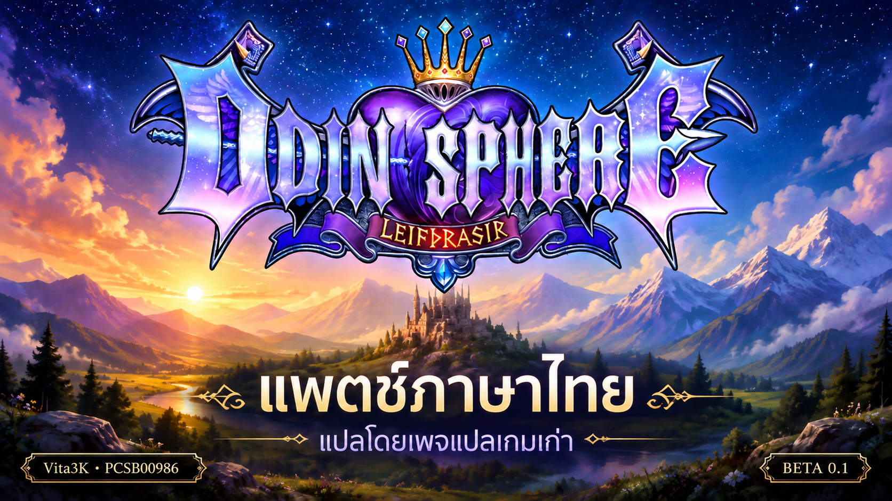

Odin Sphere Leifthrasir
แพตช์ภาษาไทย
แปลโดยเพจแปลเกมเก่า
Beta 0.1PS VitaPCSB00986แพตช์ภาษาไทยสำหรับเกม PS Vita ทดสอบบน Vita3K
คำแปล ฟอนต์ไทย เมนู และเครดิตเพจในเกม เลือกไฟล์ต้นฉบับเพื่อสร้างไฟล์ภาษาไทยในเบราว์เซอร์ ไฟล์เกมไม่ถูกส่งขึ้นเซิร์ฟเวอร์
รายละเอียดรุ่นและไฟล์ดาวน์โหลดสำรอง
ใช้กับ Vita3K บน Windows และไฟล์เกมต้นฉบับ PCSB00986 ที่ยังไม่ลงแพตช์เท่านั้น แพ็กไม่รวมเกมเต็ม ตัวแพตช์จะตรวจรุ่นจากเนื้อหาไฟล์ให้อัตโนมัติ ควรมีพื้นที่ว่างอย่างน้อย 3 GB สำหรับผลลัพธ์ และมีพื้นที่สำหรับสำรองเพิ่มเติม
ใช้ Chrome หรือ Edge บนคอมพิวเตอร์ เปิดแท็บนี้ไว้ระหว่างทำงาน ผลลัพธ์สำหรับ Vita3K Windows เท่านั้น หากหน่วยความจำไม่พอ ใช้ตัวแพตช์ Windows สำรองได้
แปะแพตช์ผ่านเว็บ
ทำทีละไฟล์ให้ครบทั้ง 4 ไฟล์ ดาวน์โหลดผลลัพธ์ก่อนเปลี่ยนไปไฟล์ถัดไป
ยังไม่ได้เลือกไฟล์
กำลังโหลดเครื่องมือ…
ดาวน์โหลดไฟล์ไทยบันทึกไฟล์นี้ให้เสร็จก่อนเลือกไฟล์ถัดไป เก็บผลลัพธ์ทั้งหมดไว้ในโฟลเดอร์เดียวกัน
สร้างสำเร็จ 0 / 4 ไฟล์
ติดตั้งหลังสร้างครบทั้ง 4 ไฟล์
- ดาวน์โหลดผลลัพธ์ครบ:
Odin2_BT_UK.CPK,Odin2_RE_UK.CPK,Odin2_OR_UK.CPKและeboot.bin - ปิด Vita3K และสำรองไฟล์เกมเดิมทั้ง 4 ไฟล์กับเซฟ
- คัดลอกผลลัพธ์ทั้ง 4 ไฟล์ไปแทนที่ใน
ux0/app/PCSB00986ของ Vita3K ตรวจชื่อให้ตรง ไม่มี (1) ต่อท้าย - เปิดเกม หากต้องการถอนแพตช์ ให้คืนไฟล์ต้นฉบับทั้ง 4 ไฟล์พร้อมกัน
ตำแหน่งตัวอย่าง: %APPDATA%/Vita3K/Vita3K/ux0/app/PCSB00986 ตำแหน่งจริงอาจต่างกันตามการตั้งค่า Vita3K
ทดสอบสร้างไฟล์ทั้ง 4 ไฟล์และตรวจ SHA-256 ตรงกับชุดไทยที่ติดตั้งแล้ว ทดสอบเล่นบางช่วง ยังไม่ได้ทดสอบจบเกม มีข้อความภาพและคำแปลบางจุดที่ต้องตรวจเพิ่มเติม โหมด Classic ยังทดสอบน้อยกว่าโหมดหลัก รุ่นนี้ไม่รองรับ PS Vita จริงหรือ Android
ตรวจสอบไฟล์ดาวน์โหลด (SHA-256)
29507dd2cb95743d27e6fc45aa8143b5f01d2c1ebe1654d94c2577bf42942401
ชื่อไฟล์: OdinSphere-PCSB00986-Thai-Beta01-Vita3K.zip
ขนาด: 86,558,128 ไบต์
พบปัญหา กรุณาแจ้งเพจพร้อมภาพ ชื่อฉาก และโหมดที่เล่น • แปลโดยเพจแปลเกมเก่า